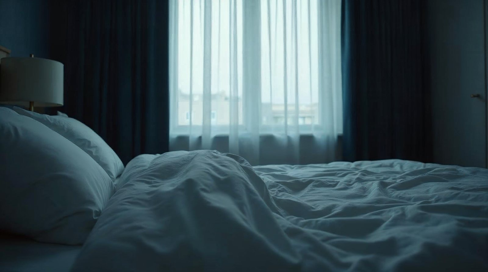
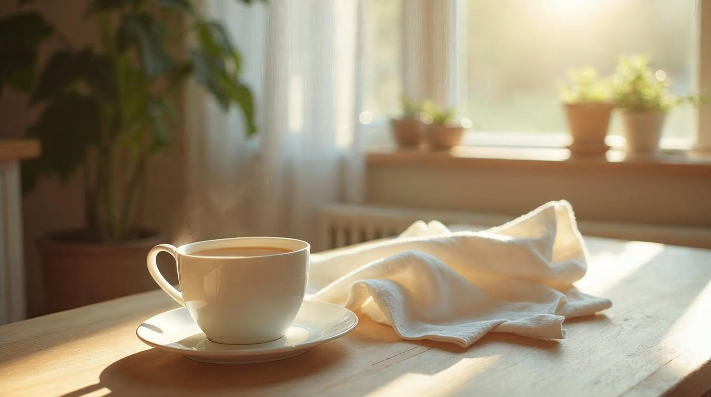
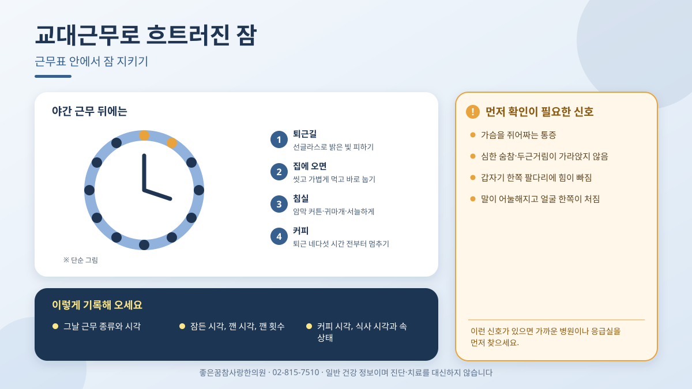

이종호 한의사 감수좋은꿈참사랑한의원 대표원장 (한의사 면허번호 19769)발행 2026-11-26 · 수정 2026-11-26
이 글의 차례
아침 여덟 시, 밤샘 근무를 마치고 퇴근하는 길입니다. 출근하는 사람들 사이를 거슬러 걸으면 눈이 따갑고 머리는 멍한데, 이상하게 집에 도착하면 잠이 달아납니다. 암막 커튼을 치고 누워도 바깥 소리가 하나하나 귀에 걸리고, 겨우 잠들었다가 두세 시간 만에 깹니다. 그리고 그날 밤 근무 중 새벽 네 시쯤이면 졸음이 파도처럼 밀려옵니다.
간호사, 생산직, 경비, 소방, 운송, 콜센터, 편의점처럼 밤에도 누군가 깨어 있어야 하는 일을 하시는 분들께 진료실에서 자주 듣는 이야기입니다. 근무표가 바뀔 때마다 몸이 한 박자씩 늦게 따라오고, 쉬는 날에도 잠이 들쭉날쭉해 피로가 풀리지 않는다고 하십니다.
이렇게 근무 시각 때문에 잠들어야 할 때 잠들지 못하고, 깨어 있어야 할 때 졸음이 쏟아지는 상태가 몇 주 넘게 이어지는 것을 교대근무 수면 장애라고 부릅니다. 일을 바꾸기 어려운 분이 대부분이라, 진료실에서는 근무표 안에서 잠을 지킬 수 있는 방법을 함께 찾습니다.
교대근무 수면 장애는 어떤 모습으로 나타나나요?
가장 흔한 모습은 두 가지입니다. 야간 근무를 마치고 낮에 자려 할 때 잠들기 어렵거나 자주 깨는 것, 그리고 근무 중에 졸음이 심해 집중이 흐트러지는 것입니다. 이 두 가지가 한 사람에게 함께 나타나는 경우가 많습니다.
잠의 총량도 줄어듭니다. 낮잠은 밤잠보다 얕고 짧아지기 쉬워서, 야간 근무가 이어지는 주에는 하루 잠이 네다섯 시간에 그치는 분이 많습니다. 그 부족이 쌓이면 쉬는 날에 몰아서 자게 되고, 그러면 다음 근무 주기에 몸이 다시 헤매게 됩니다.
몸의 다른 곳에서도 신호가 옵니다. 소화가 안 되고 속이 쓰리거나, 변비와 설사가 번갈아 오는 분, 두통과 어깨 결림이 잦은 분, 감기에 자주 걸리는 분이 많습니다. 짜증이 늘고 기분이 가라앉는다고 말씀하시는 분도 계십니다.
왜 교대근무를 하면 잠이 흐트러질까요
우리 몸에는 대략 하루 주기로 돌아가는 시계가 있습니다. 이 시계는 밤이 되면 체온을 낮추고 잠을 부르는 호르몬을 내보내며, 아침이 되면 체온과 각성을 올립니다. 그리고 이 시계를 맞추는 가장 강한 신호는 빛, 그다음이 식사와 움직임입니다.
야간 근무를 하면 이 시계와 정반대로 살아야 합니다. 몸이 자려는 새벽에 깨어 일하고, 몸이 깨어나려는 아침에 잠을 청합니다. 게다가 퇴근길 아침 햇빛이 '지금은 낮'이라는 신호를 강하게 주기 때문에, 집에 도착할 무렵에는 오히려 잠이 달아나기 쉽습니다.
근무가 돌아가며 바뀌면 문제는 더 커집니다. 몸의 시계는 하루에 한두 시간 정도만 옮겨 갈 수 있어서, 사흘마다 근무가 바뀌면 시계가 새 근무에 맞춰지기도 전에 다시 바뀌어 버립니다. 이른바 늘 시차 적응 중인 상태로 지내게 되는 것입니다.
한의학에서는 밤은 음의 시간, 낮은 양의 시간으로 봅니다. 밤에 깨어 일하는 생활이 길어지면 몸을 식히고 채우는 음의 기운이 소모되면서, 손발은 화끈거리는데 잠은 얕고 입이 마르는 모습이 나타나기도 합니다. 진료에서는 이런 흐름을 맥과 몸의 열감으로 함께 살핍니다.
일반 불면, 수면무호흡과는 어떻게 다른가요
일반적인 불면은 밤에 누워도 잠이 오지 않는 것이 중심이고, 근무 시각과 크게 상관없이 이어집니다. 교대근무 수면 장애는 근무 패턴이 바뀔 때마다 잠이 함께 흔들리고, 근무를 쉬는 기간이 길어지면 차츰 나아지는 경우가 많다는 점이 다릅니다.
코를 심하게 골고 자다가 숨이 멎는다는 말을 듣는다면 수면무호흡을 함께 살펴야 합니다. 이 경우에는 잠의 시각을 아무리 맞춰도 낮 졸음이 남을 수 있어 수면 검사를 받아 보시길 권합니다.
충분히 자는데도 낮에 갑자기 견디기 어려운 졸음이 쏟아진다면 과다수면이나 기면증 같은 다른 수면 문제일 수도 있습니다. 졸음의 모습이 근무 패턴과 상관없이 이어지는지 기록해 보시면 구분하는 데 도움이 됩니다.
내 잠을 스스로 점검해 보기
아래 항목 가운데 나에게 해당하는 것을 세어 보세요. 진단이 아니라 진료실에서 이야기를 시작할 실마리입니다.
- 야간 근무 뒤 낮에 자려 하면 잠들기까지 오래 걸린다
- 낮잠 중에 자주 깨고 다시 잠들기 어렵다
- 새벽 근무 중 졸음이 심해 집중이 흐트러진다
- 근무가 바뀔 때마다 며칠씩 몸이 적응하지 못한다
- 쉬는 날 몰아서 자도 피로가 풀리지 않는다
- 소화, 두통, 기분 변화가 근무 주기를 따라 온다
해당하는 항목이 많고 이런 상태가 한 달 넘게 이어졌다면, 근무표에 맞춘 잠 계획을 함께 세워 보시길 권합니다.
먼저 이렇게 여쭙니다
처음 오시면 저는 대략 이런 순서로 여쭙니다. 미리 생각해 오시면 이야기가 수월해집니다.
- 근무는 어떤 순서로 며칠씩 돌아가나요? 쉬는 날은 며칠인가요?
- 야간 근무 뒤에는 몇 시에 자고 몇 시에 깨나요?
- 근무 중 졸음이 가장 심한 시각은 언제인가요?
- 커피, 에너지 음료, 담배는 언제 얼마나 하시나요?
- 근무 중 식사와 간식은 몇 시에 무엇을 드시나요?
- 집에서 낮에 잘 때 빛과 소음은 어떤가요? 함께 사는 가족은 있나요?
근무표를 바꿀 수 있는 여지가 있는지도 여쭙니다. 근무가 바뀌는 방향을 주간에서 저녁, 저녁에서 야간처럼 시계 방향으로 돌리면 몸이 따라가기가 조금 수월합니다. 바꿀 수 없다면 지금 근무표 안에서 할 수 있는 것부터 찾습니다.
일상에서 먼저 해 볼 수 있는 것
교대근무를 하면서 잠을 지키는 핵심은 빛을 다루는 것, 잠을 나눠 지키는 것, 쉬는 날을 현명하게 보내는 것입니다. 모두 한꺼번에 하기보다 하나씩 몸에 익혀 보세요.
- 야간 근무 퇴근길에는 선글라스를 쓰고 밝은 빛 피하기
- 집에 오면 바로 씻고 가볍게 먹은 뒤 곧장 잠자리에 들기
- 침실은 암막 커튼, 귀마개, 서늘한 온도로 밤처럼 만들기
- 야간 근무 전 오후에 90분 안쪽으로 미리 자 두기
- 커피는 근무 시작 무렵에만, 퇴근 네다섯 시간 전부터는 멈추기
- 졸린 상태로 운전하지 않고, 졸리면 잠깐 쉬었다 출발하기
낮에 자는 동안에는 휴대폰을 무음으로 하고, 가족에게 잠자는 시간을 알려 두세요. 문 앞에 '자는 중' 표시를 붙여 두는 것만으로도 택배나 방문으로 깨는 일이 줄어듭니다.
근무 중에는 반대로 밝은 빛을 받는 것이 도움이 됩니다. 야간 근무 초반에 밝은 조명 아래에서 일하면 몸이 깨어 있기 쉽고, 새벽 졸음이 덜해집니다. 다만 퇴근 두세 시간 전부터는 조명을 조금 낮추는 것이 집에 가서 잠들기에 유리합니다.
근무 중 쉬는 시간이 있다면 20분 안쪽의 짧은 쪽잠이 새벽 졸음을 덜어 줄 수 있습니다. 30분을 넘기면 깊은 잠에 들어가 깬 뒤 더 멍해질 수 있으니 알람을 맞춰 두세요. 쪽잠 뒤에는 찬물로 세수하고 몇 분 걸으면 정신이 빨리 돌아옵니다.
몸을 움직이는 것도 졸음을 이기는 방법입니다. 새벽에 졸음이 밀려올 때는 자리에서 일어나 계단을 오르내리거나 스트레칭을 해 보세요. 가만히 앉아 버티는 것보다 몸이 훨씬 빨리 깨어납니다.
근무 중 식사와 간식은 어떻게 하나요
밤에는 소화를 맡은 기관도 쉬려고 하기 때문에, 새벽에 기름지고 양이 많은 음식을 먹으면 속이 쉽게 불편해집니다. 야간 근무 중에는 근무 시작 전 제대로 된 한 끼를 먹고, 새벽에는 가벼운 간식 정도로 넘기는 쪽을 권합니다.
간식은 단 과자나 빵보다 따뜻한 국물, 삶은 달걀, 두부, 바나나처럼 속에 부담이 적은 것을 고르세요. 단 음식은 잠깐 기운을 올렸다가 금방 더 처지게 만들기 쉽습니다. 물은 조금씩 자주 드시되, 퇴근 직전에 많이 마시면 낮잠 중에 화장실 때문에 깰 수 있습니다.
퇴근 뒤 잠들기 전에는 배가 너무 고프지도, 너무 부르지도 않게 가볍게 드세요. 공복이 심하면 잠이 얕아지고, 과식하면 속이 불편해 깨기 쉽습니다.
쉬는 날은 어떻게 보내나요
야간 근무가 끝나고 쉬는 날이 시작되면 많은 분이 오후 늦게까지 몰아서 주무십니다. 그러면 그날 밤 잠이 오지 않고, 다음 날까지 리듬이 흐트러집니다. 야간 근무 마지막 날 퇴근 뒤에는 서너 시간만 짧게 자고 일어나, 그날 밤 일찍 잠자리에 드는 쪽이 낮 생활로 돌아오기 쉽습니다.
쉬는 날 아침에는 바깥 빛을 충분히 쬐고, 낮에는 몸을 움직이세요. 가족과 함께 식사하고 햇볕 아래 걷는 시간이 몸의 시계를 낮 쪽으로 돌려 주는 신호가 됩니다.
쉬는 날을 모두 회복에만 쓰기 어렵다는 것도 압니다. 밀린 집안일과 약속이 기다리고 있으니까요. 그래도 쉬는 날 가운데 하루는 잠과 식사 리듬을 되돌리는 날로 정해 두시면, 다음 근무 주기를 조금 덜 지친 상태로 시작할 수 있습니다.

가족과 함께 사는 집에서 낮잠 지키기
낮에 자야 하는 사람이 있는 집은 생활 소리가 가장 큰 고민입니다. 청소기, 세탁기, 아이들 노는 소리, 현관 벨 소리가 겹치면 겨우 든 잠이 깨기 쉽습니다. 가족과 함께 '낮잠 시간'을 정해 두고, 그 시간에는 시끄러운 집안일을 미뤄 달라고 부탁해 보세요.
침실을 집에서 가장 조용한 방으로 옮기는 것도 방법입니다. 거실이나 현관과 먼 방, 도로 쪽이 아닌 방을 고르고, 백색소음기나 선풍기 소리처럼 일정한 소리를 틀어 두면 갑작스러운 생활 소리가 덜 거슬립니다.
아이를 키우는 분이라면 야간 근무 다음 날 오전에는 배우자나 가족에게 돌봄을 잠시 부탁해 보세요. 몇 시간만이라도 끊기지 않는 잠을 확보하는 것이 그 주 전체의 컨디션을 좌우합니다.
한의원에서 함께 살필 수 있는 경우
- 야간 근무 뒤 낮잠이 얕고 자주 깨며 피로가 쌓이는 경우
- 근무 주기를 따라 소화불량, 속쓰림, 변비가 반복되는 경우
- 손발은 화끈거리는데 입이 마르고 잠이 얕은 경우
- 두통과 목·어깨 결림이 근무가 바뀔 때마다 심해지는 경우
- 수면제를 드시면서 몸의 피로와 소화를 함께 살피고 싶은 경우
좋은꿈참사랑한의원에 오시면 먼저 아래 '먼저 확인이 필요한' 신호가 없는지부터 봅니다. 그다음 맥을 짚고 손발과 배의 온도, 소화 상태, 목과 어깨의 굳은 정도를 확인합니다. 필요하다고 판단되면 인바디로 체성분을 살펴 교대근무 동안의 변화를 함께 봅니다.
진찰한 내용을 바탕으로 근무표에 맞춘 잠 계획 하나와 함께 침, 온열 관리, 한약 상담 가운데 지금 상태에 맞는 것을 정합니다. 한약을 상의할 때는 드시는 약을 모두 확인하고 신중하게 정합니다. 수면제나 다른 약은 처방한 선생님과 상의 없이 멈추지 않습니다.
이렇게 기록해 오시면 상담이 쉬워집니다
근무표와 잠을 나란히 놓고 보는 것이 가장 중요합니다. 한 근무 주기 이상 아래 내용을 적어 보세요.
- 그날 근무 종류와 시각
- 잠든 시각과 깬 시각, 중간에 깬 횟수
- 근무 중 졸음이 가장 심했던 시각
- 커피와 에너지 음료를 드신 시각
- 식사 시각과 속 상태
기록을 나란히 놓으면 어떤 근무 다음에 잠이 가장 무너지는지, 커피를 늦게 마신 날 낮잠이 더 얕았는지가 보입니다. 그 연결이 근무표 안에서 바꿀 수 있는 것을 찾는 실마리가 됩니다.

밤을 지키는 분들의 잠을 위해
다른 사람이 잠든 시간에 깨어 있는 일은 그 자체로 몸에 큰 부담입니다. 잠이 흐트러지는 것은 의지가 약해서가 아니라 몸의 시계와 반대로 살고 있기 때문입니다. 그 사실을 먼저 알아 주셨으면 합니다.
교대근무를 오래 해 온 분일수록 몸이 보내는 작은 신호를 무심코 넘기기 쉽습니다. 소화, 잠, 기분이 근무 주기를 따라 흔들린다면 쉬어 가라는 신호로 받아들여 주세요.
이번 근무 주기에는 퇴근길 선글라스와 암막 커튼, 이 두 가지만 먼저 챙겨 보세요. 다음에 오시면 근무표와 잠 기록을 나란히 놓고 함께 살펴보겠습니다.
이런 증상은 먼저 확인이 필요합니다
- 가슴을 쥐어짜는 통증이나 심한 숨참, 두근거림이 쉬어도 가라앉지 않는 경우
- 갑자기 한쪽 팔다리에 힘이 빠지거나 말이 어눌해지고 얼굴 한쪽이 처지는 경우
이런 신호가 있으면 한의원보다 가까운 병원이나 응급실을 먼저 찾으세요.
함께 읽으면 좋은 글
- 야간 근무를 마친 간호사가 낮에 자야 할 때 침실은 어떻게 준비하나요?
- 야근이나 교대근무로 방문 일정이 불규칙할 때는 어떻게 계획하나요?
- 잠이 잘 오지 않을 때 한의원에서는 무엇을 먼저 살피나요?
- 밤에 충분히 자도 낮에 졸음이 쏟아지는 과다수면·기면증 의심은 어떻게 살피나요?
- 수면 일기는 어떻게 쓰면 진료에 도움이 되나요?

여쭙는 것
- 근무는 어떤 순서로 며칠씩 돌아가나요? 쉬는 날은 며칠인가요?
- 야간 근무 뒤에는 몇 시에 자고 몇 시에 깨나요?
- 근무 중 졸음이 가장 심한 시각은 언제인가요?
생활에서 해 볼 것
- 야간 근무 퇴근길에는 선글라스를 쓰고 밝은 빛 피하기
- 집에 오면 바로 씻고 가볍게 먹은 뒤 곧장 잠자리에 들기
- 침실은 암막 커튼, 귀마개, 서늘한 온도로 밤처럼 만들기
한의원에서 함께 살필 것
- 야간 근무 뒤 낮잠이 얕고 자주 깨며 피로가 쌓이는 경우
- 근무 주기를 따라 소화불량, 속쓰림, 변비가 반복되는 경우
- 손발은 화끈거리는데 입이 마르고 잠이 얕은 경우
먼저 확인이 필요한 신호
- 가슴을 쥐어짜는 통증이나 심한 숨참, 두근거림이 쉬어도 가라앉지 않는 경우
- 갑자기 한쪽 팔다리에 힘이 빠지거나 말이 어눌해지고 얼굴 한쪽이 처지는 경우
한눈에 보는 표
| 구분 | 핵심 |
|---|---|
| 여쭙는 것 | 근무는 어떤 순서로 며칠씩 돌아가나요? 쉬는 날은 며칠인가요? 야간 근무 뒤에는 몇 시에 자고 몇 시에 깨나요? |
| 생활에서 해 볼 것 | 야간 근무 퇴근길에는 선글라스를 쓰고 밝은 빛 피하기 집에 오면 바로 씻고 가볍게 먹은 뒤 곧장 잠자리에 들기 |
| 한의원에서 함께 살필 것 | 야간 근무 뒤 낮잠이 얕고 자주 깨며 피로가 쌓이는 경우 근무 주기를 따라 소화불량, 속쓰림, 변비가 반복되는 경우 |
| 먼저 확인이 필요한 신호 | 가슴을 쥐어짜는 통증이나 심한 숨참, 두근거림이 쉬어도 가라앉지 않는 경우 갑자기 한쪽 팔다리에 힘이 빠지거나 말이 어눌해지고 얼굴 한쪽이 처지는 경우 |
자주 묻는 질문
야간 근무 뒤 낮에 잠이 안 오면 수면제를 먹어도 되나요?
수면제는 처방한 선생님과 상의해서 정하셔야 합니다. 이미 드시고 계시다면 함께 알려 주시고, 한의원에서는 빛과 침실 환경, 식사 시각처럼 함께 바꿔 볼 수 있는 부분을 살핍니다.
쉬는 날 몰아서 자는 것은 괜찮나요?
부족한 잠을 채우는 것은 필요하지만, 오후 늦게까지 자면 그날 밤 잠이 흐트러지기 쉽습니다. 야간 근무 마지막 날에는 서너 시간만 자고 일어나 밤에 일찍 자는 쪽을 권합니다.
근무 중 졸음을 쫓으려고 커피를 많이 마셔도 되나요?
근무 시작 무렵 한두 잔은 도움이 될 수 있지만, 퇴근 네다섯 시간 전부터는 멈추는 것이 좋습니다. 늦게 마신 커피는 퇴근 뒤 낮잠을 얕게 만들 수 있습니다.
교대근무를 하면서 한의원 진료를 꾸준히 받을 수 있을까요?
근무표를 보고 쉬는 날이나 퇴근 뒤 시간에 맞춰 방문 일정을 함께 정합니다. 일정이 바뀔 때는 전화로 미리 시간을 맞추시면 됩니다.
좋은꿈참사랑한의원은 재진 때 지난번 이야기부터 이어서 여쭙니다. 진료시간과 예약은 오시는 길에서 확인하세요.
어디서 상담받을 수 있나요?
좋은꿈참사랑한의원은 서울 동작구 만양로2길 2 신성빌딩 3층·5층(서울 동작구 상도동, 7호선 상도역 3번 출구 근처)에 있습니다. 한의사 3명(이종호 대표원장, 조영기 수석진료원장, 정원영 진료원장)이 진료합니다. 진료시간은 평일 09:30~20:00(점심 13:00~14:00), 토·일·공휴일 09:30~15:00이며, 방문 전 전화로 확인을 권합니다. 예약은 네이버 예약, 카카오톡 상담, 전화 02-815-7510로 받습니다.
이 글은 일반적인 건강 정보이며 개인의 진단이나 치료를 대신하지 않습니다. 증상이 있거나 복용 중인 약이 있다면 진료를 통해 확인하세요. 치료 효과는 개인마다 다를 수 있습니다.
작성 기준: 일반적으로 알려져 있는 건강 정보를 참고해 정리했습니다(대표원장 감수). 증상 기록은 1~2주 동안 하루 1회, 비슷한 시간에 적어 오시면 지난 상태와 비교하기 쉽습니다.